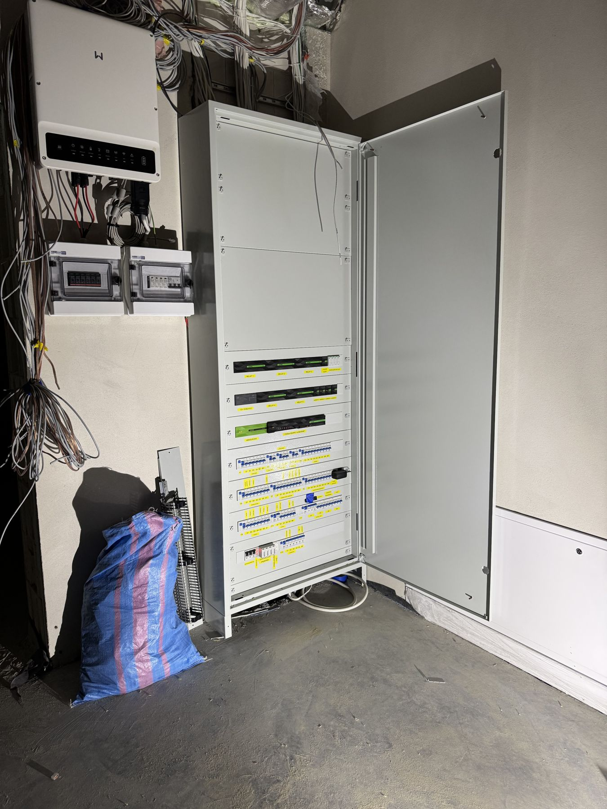

Pomiary elektryczne
Pomiary elektryczne z protokołem
Wykonujemy pomiary odbiorcze i okresowe instalacji elektrycznych, rozdzielnic i maszyn. Każdy pomiar kończy się protokołem. Uprawnienia SEP E + D.
Zakres
Pełen zakres pomiarów instalacji i maszyn
Pomiary dla zakładów produkcyjnych, obiektów technicznych i inwestycji — przy odbiorze nowej instalacji i w ramach przeglądów okresowych.
Pomiary ochrony przeciwporażeniowej
Sprawdzenie skuteczności ochrony przed porażeniem prądem.
- Impedancja pętli zwarcia
- Wyłączniki różnicowoprądowe (RCD)
- Ciągłość przewodów ochronnych i wyrównawczych
Rezystancja izolacji
Pomiary izolacji przewodów, kabli, silników i aparatury.
- Obwody instalacji
- Kable zasilające i sterownicze
- Silniki i maszyny
Uziemienia
Pomiary rezystancji uziemień ochronnych i roboczych.
- Uziemienia rozdzielnic i obiektów
- Uziemienia urządzeń technologicznych
Pomiary odbiorcze i okresowe
Komplet pomiarów przy odbiorze instalacji oraz w ramach przeglądów okresowych.
- Odbiory nowych instalacji i maszyn
- Przeglądy okresowe
- Protokoły do dokumentacji obiektu

Dlaczego my
Protokół, który przejdzie każdą kontrolę
Pomiary wykonujemy rzetelnie i dokumentujemy tak, aby protokół był czytelny dla inspektora, ubezpieczyciela i Twojego działu utrzymania ruchu.
- Uprawnienia SEP E + D
- Protokół z wynikami i oceną po każdym pomiarze
- Wskazanie nieprawidłowości i propozycja naprawy
- Możliwość połączenia pomiarów z usunięciem usterek
FAQ
Pytania i odpowiedzi
Jak często wykonywać pomiary okresowe?
Częstotliwość zależy od rodzaju obiektu i warunków pracy instalacji. Podpowiemy, jaki termin obowiązuje w Twoim przypadku.
Czy usuwacie usterki wykryte podczas pomiarów?
Tak — możemy od razu przygotować wycenę naprawy i wykonać ponowne pomiary po jej zakończeniu.
Pozostałe usługi
Zobacz też
Masz projekt lub problem do rozwiązania?
Opisz krótko zakres — odpowiemy w ciągu 1 dnia roboczego i przygotujemy bezpłatną wycenę.